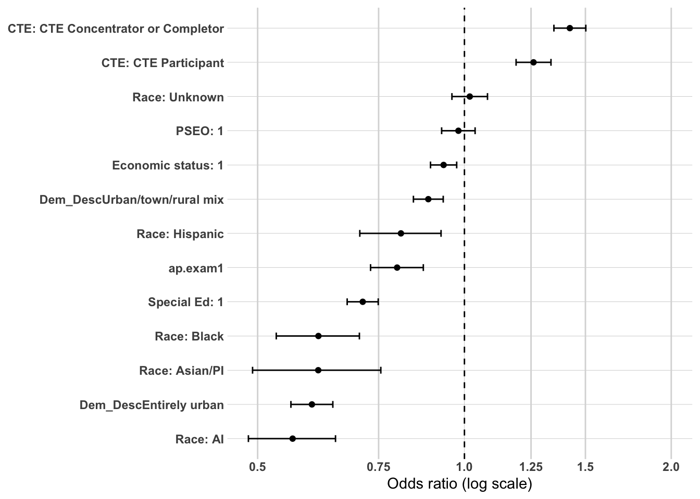
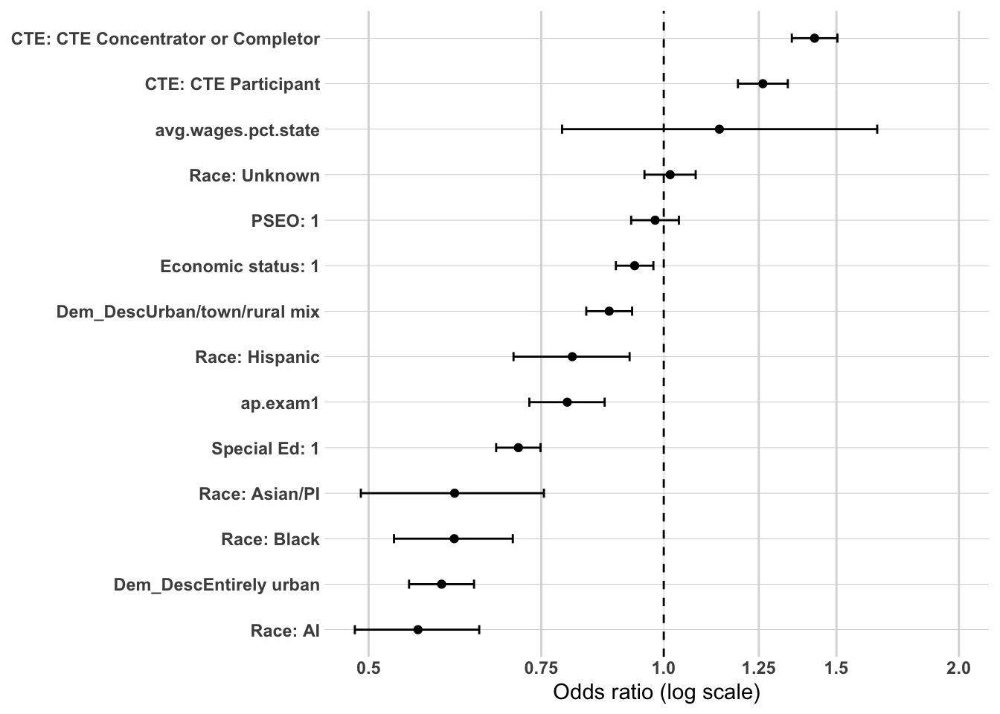
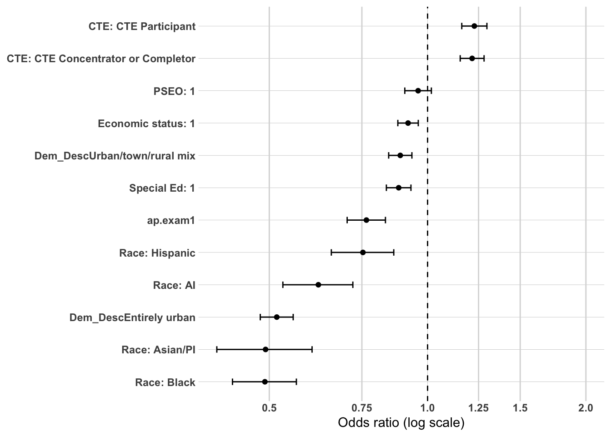
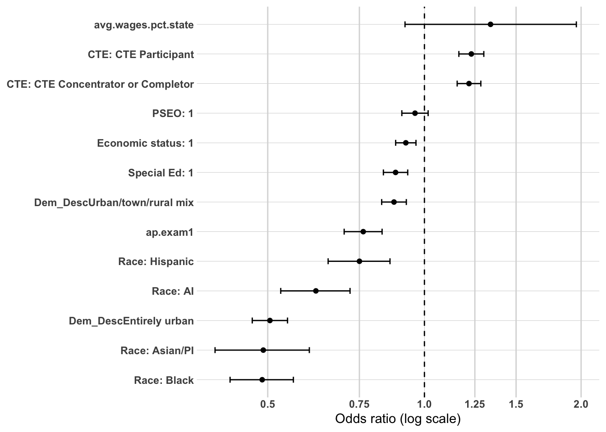
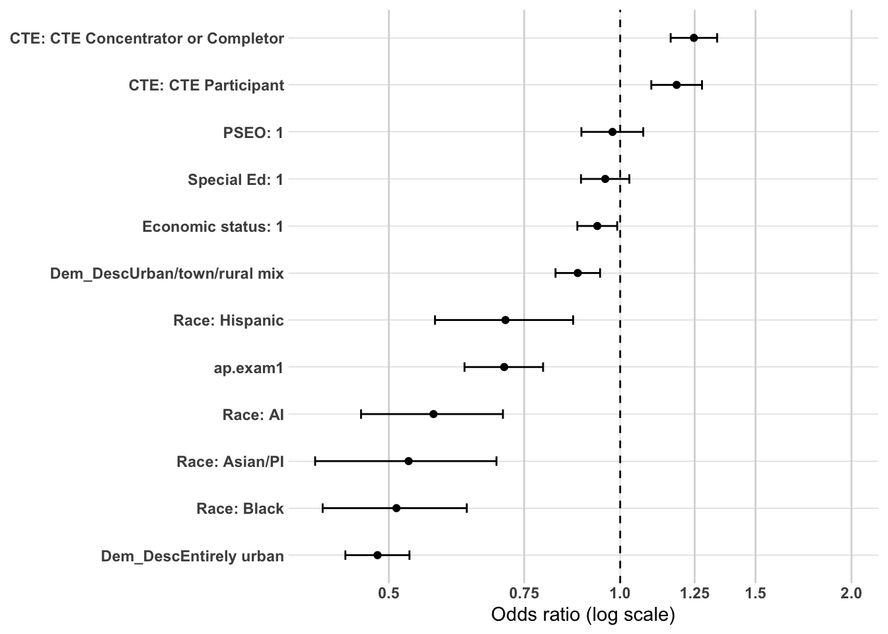
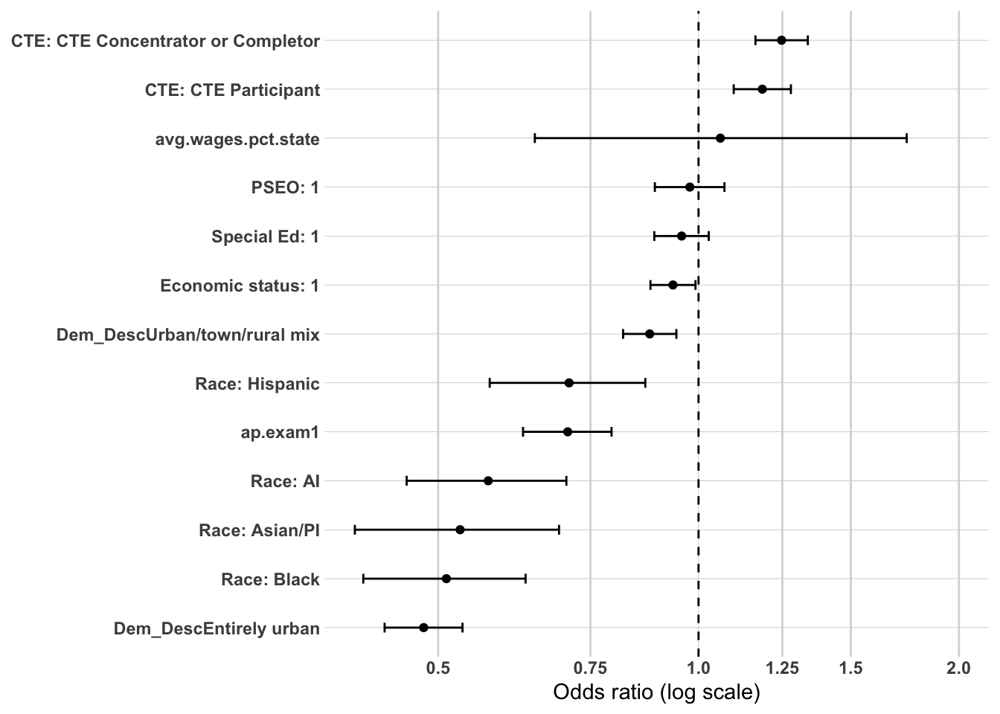

The primary purpose of this supplemental analysis is to examine workforce participation pathways among individuals who did not complete a postsecondary credential. Earlier sections focused on the full population and demonstrated that postsecondary attainment—particularly where and how a credential was earned—was the dominant mechanism associated with sustained regional employment.
This section shifts attention to the population for whom that mechanism does not operate.
Among non–postsecondary graduates, workforce participation pathways cannot be explained by credential depth, institutional sector, or graduation location. Instead, earlier descriptive and CART analyses identified high school career alignment (CTE), structural disadvantage, and local labor market context as central differentiators of workforce outcomes.
To strengthen confidence in those findings, a limited multivariate analysis is conducted using logistic regression. As in the full-population analysis, the goal is not causal inference or prediction, but confirmatory testing. Specifically, this modeling examines whether the strongest tree-based and bivariate relationships remain directionally consistent when key predictors are considered simultaneously.
Logistic regression is used here as a confirmatory tool rather than the primary analytic framework.
Methodology
Study Population
The analytic sample is restricted to individuals who did not complete a postsecondary credential. This restriction isolates workforce dynamics among high school graduates entering the labor market directly.
Outcome Variable
The primary model predicts:
Sustained employment – region (binary outcome)
The dependent variable is coded as:
1 = Sustained employment – region
0 = All other workforce outcomes (including sustained employment – MN outside the region, non-sustained employment, and no MN employment record)
This specification maintains consistency with earlier modeling while isolating mechanisms specific to the non-college population.
Independent Variables
Because postsecondary mechanisms are not applicable in this subgroup, the model focuses on high school preparation, structural background, and local labor market context identified as important in earlier analyses.
Predictors include:
High school accomplishments
cte.achievement
total.cte.courses.taken (if applicable)
pseo.participant
MCA.M
ap.exam
Demographic characteristics
RaceEthnicity
economic.status
SpecialEdStatus
High school and local context
Dem_Desc
avg.wages.pct.state
avg.unemp.rate (if included)
Variables are selected based on:
Strength of association in prior subgroup analyses
Conceptual plausibility within a non-college pathway
Policy relevance
Avoidance of redundancy
Postsecondary variables are excluded by design.
Analysis Approach
This multivariate analysis mirrors the structured confirmatory framework used in the full-population models but is adapted to the non-college subgroup.
The dependent variable is a binary indicator of Sustained employment – region.
Time-Based Modeling Strategy
Workforce attachment evolves over time. To capture this dynamic process, models will be estimated separately at:
1 year after high school
5 years after high school
10 years after high school
This staged approach allows examination of how mechanisms change across early, mid-term, and longer-term workforce trajectories.
Year 1: Immediate Labor Market Entry
The 1-year model captures early transition into the labor market. At this stage, high school preparation and career alignment are expected to exert the strongest influence. CTE exposure and intensity may function as immediate workforce anchors, while structural disadvantage may strongly shape early labor market attachment.
Year 5: Stabilization Phase
The 5-year model reflects early career consolidation. At this point, initial preparation effects may attenuate, and differences associated with labor market context and structural disadvantage may become more pronounced. This model evaluates whether early alignment persists or whether structural conditions increasingly shape outcomes.
Year 10: Long-Term Embeddedness
The 10-year model captures longer-term workforce integration. Earlier analyses suggest that local labor market conditions (e.g., wages and unemployment) may become more dominant over time. This specification tests whether contextual economic factors increasingly explain sustained regional employment among non-college graduates as individual preparation effects diminish.
Estimating separate models at each time point allows for:
Evaluation of coefficient stability over time
Assessment of attenuation or amplification of predictors
Identification of shifting mechanisms from individual preparation to structural context
Modeling Strategy
Within each time period, predictors are introduced in a structured sequence:
Model 1: Structural and Preparation Baseline
Includes demographic and high school preparation variables:
RaceEthnicity
economic.status
SpecialEdStatus
cte.achievement
pseo.participant
MCA.M - dropped due to systemic missingness
ap.exam
Dem_Desc
Model 2: Local Labor Market Context
Adds contextual labor market measures:
avg.wages.pct.state
avg.unemp.rate (if applicable)
This specification evaluates whether labor market context attenuates or reinforces preparation effects.
Evaluation Criteria
Results will be reported using:
Odds ratios
95% confidence intervals
Statistical significance levels
Directional interpretation
Model comparison metrics (AIC and pseudo R²) will be used to assess relative improvement across specifications, but emphasis will remain on coefficient magnitude and stability across time.
Interpretation Framework
Interpretation will focus on:
Whether CTE retains independent influence across time
Whether structural disadvantage grows or attenuates
Findings will be described as associations holding other included variables constant. No causal claims will be made.
Conceptual Focus
For non–postsecondary graduates, this time-structured modeling framework evaluates three evolving mechanisms:
Career alignment at labor market entry
Structural advantage or disadvantage shaping early stability
Local economic opportunity structures influencing long-term embeddedness
Together, these models clarify whether sustained regional employment among non-college graduates reflects early career alignment, structural inequality, changing economic context, or a combination of all three across time.
Prep data
The first thing I need to do is setup my dataset for modeling. I’m going to create the workforce participation into a binary and will use grad.year.5 as my modeling year.
We now have 45,741 individuals to model with 8 variables not including grad.year.5.
Modeling - grad.year.1
Model 1 - Demographics, HS Accomplishments
Model 1 serves as the baseline structural and preparation model, estimating the association between demographic background, high school academic preparation, and sustained regional employment one year after graduation. This specification excludes the local labor market variables in order to isolate whether early academic readiness and demographic characteristics independently differentiate workforce pathway outcomes. By modeling these predictors first, the analysis establishes whether observed disparities in regional workforce attachment emerge prior to postsecondary completion.
CTE Pathways
CTE emerges as the strongest positive predictor in the model:
This indicates that structured career pathways in high school are strongly associated with immediate regional workforce attachment among non-college graduates.
Academic Acceleration
AP participation: ~20% lower odds (OR ≈ 0.80).
PSEO participation: not statistically distinct (OR ≈ 0.98).
Academic acceleration indicators do not promote regional retention in the non-college population and, in the case of AP, are associated with lower regional attachment.
Demographic and Structural Factors
Substantial disparities are evident:
American Indian students: ~44% lower odds (OR ≈ 0.56).
Asian/PI students: ~39% lower odds (OR ≈ 0.61).
Black students: ~39% lower odds (OR ≈ 0.61).
Hispanic students: ~19% lower odds (OR ≈ 0.81).
Race Unknown: not statistically distinct.
Special Education status: ~29% lower odds (OR ≈ 0.71).
Economic disadvantage: small negative association (~7% lower odds).
These results indicate that structural disparities in regional workforce attachment emerge immediately and persist even within the non-college population.
Students from more urbanized school contexts are significantly less likely to exhibit early regional workforce attachment compared to those from town/rural mix schools.
Overall Interpretation
Among non-postsecondary graduates, early sustained regional employment is most strongly associated with career-aligned high school preparation through CTE. Academic acceleration (AP) aligns with lower regional retention, while PSEO shows no independent effect at Year 1. Structural racial disparities and urban school context differences remain substantial even when controlling for preparation factors.
library(broom)library(forcats)library(stringr)or_plot <-tidy(model1, conf.int =TRUE, exponentiate =TRUE) %>%filter(term !="(Intercept)") %>%mutate(# Make labels nicer (edit these replacements to match your exact factor labels)term =str_replace_all(term, c("RaceEthnicity"="Race: ","economic.status"="Economic status: ","SpecialEdStatus"="Special Ed: ","pseo.participant"="PSEO: ","cte.achievement"="CTE: ","MCA.M"="MCA Math" )),# Put most important effects near the top (optional: tweak ordering later)term =fct_reorder(term, estimate) )ggplot(or_plot, aes(x = estimate, y = term)) +geom_vline(xintercept =1, linetype ="dashed") +geom_vline(xintercept =c(0.5, 0.75, 1.25, 1.5, 2),color ="grey85") +geom_point() +geom_errorbar(aes(xmin = conf.low, xmax = conf.high),orientation ="y",width =0.2 ) +scale_x_log10(breaks =c(0.5, 0.75, 1, 1.25, 1.5, 2),labels =c("0.5", "0.75", "1.0", "1.25", "1.5", "2.0") ) + theme_line +labs(x ="Odds ratio (log scale)",y =NULL )

Model 2 - adding local labor market
Model 2 adds local labor market context (avg.wages.pct.state) to the baseline structural and preparation model. Model fit is unchanged (AIC ≈ 54,850), indicating that local wage context contributes little additional explanatory power beyond individual and school characteristics at one year after graduation.
These effects are virtually identical to Model 1, reinforcing that career-aligned coursework is the dominant workforce-alignment mechanism among non-college graduates at Year 1.
Academic Acceleration
AP participation: ~20% lower odds (OR ≈ 0.80).
PSEO participation: not statistically distinct (OR ≈ 0.98).
As in Model 1, academic acceleration does not promote early regional workforce attachment in this population.
Demographic and Structural Factors
Disparities remain stable and substantial:
American Indian students: ~44% lower odds (OR ≈ 0.56).
Asian/PI students: ~39% lower odds (OR ≈ 0.61).
Black students: ~39% lower odds (OR ≈ 0.61).
Hispanic students: ~19% lower odds (OR ≈ 0.81).
Race Unknown: not statistically distinct.
Special Education status: ~29% lower odds (OR ≈ 0.71).
Economic disadvantage: small negative association (~7% lower odds).
Coefficient stability across Models 1 and 2 indicates that these structural disparities are not explained by local wage variation.
Average county wages (% of state): small positive coefficient, modest magnitude (OR ≈ 1.14), and limited influence on overall model fit.
Local labor market wage context has only a minor independent association with Year 1 regional employment once student-level factors are included.
Overall Interpretation
Among non-postsecondary graduates at one year after high school, early sustained regional employment is driven primarily by CTE participation. Structural racial disparities and urban school context differences remain strong and stable. Adding local labor market wage context does not materially change the findings, suggesting that early regional attachment for non-college graduates is shaped more by individual preparation and structural factors than by variation in county wage levels.
or_plot <-tidy(model2, conf.int =TRUE, exponentiate =TRUE) %>%filter(term !="(Intercept)") %>%mutate(# Make labels nicer (edit these replacements to match your exact factor labels)term =str_replace_all(term, c("RaceEthnicity"="Race: ","economic.status"="Economic status: ","SpecialEdStatus"="Special Ed: ","pseo.participant"="PSEO: ","cte.achievement"="CTE: ","MCA.M"="MCA Math" )),# Put most important effects near the top (optional: tweak ordering later)term =fct_reorder(term, estimate) )ggplot(or_plot, aes(x = estimate, y = term)) +geom_vline(xintercept =1, linetype ="dashed") +geom_vline(xintercept =c(0.5, 0.75, 1.25, 1.5, 2),color ="grey85") +geom_point() +geom_errorbar(aes(xmin = conf.low, xmax = conf.high),orientation ="y",width =0.2 ) +scale_x_log10(breaks =c(0.5, 0.75, 1, 1.25, 1.5, 2),labels =c("0.5", "0.75", "1.0", "1.25", "1.5", "2.0") ) + theme_line +labs(x ="Odds ratio (log scale)",y =NULL )

Modeling - grad.year.5
Model 1 - Demographics, HS Accomplishments
This model examines predictors of sustained regional employment five years after high school among individuals who did not complete postsecondary education. Model fit improves meaningfully over the null model (AIC ≈ 51,560), indicating that demographic and preparation variables explain a nontrivial share of variation in regional attachment at Year 5.
Although the magnitude is smaller than at Year 1, CTE continues to function as the primary workforce-alignment mechanism among non-college graduates at Year 5.
Academic Acceleration
AP participation: ~24% lower odds (OR ≈ 0.77).
PSEO participation: not statistically distinct (OR ≈ 0.96).
As at Year 1, academic acceleration pathways do not promote regional retention within this population and are modestly associated with outward mobility.
Demographic and Structural Factors
Disparities remain substantial and in some cases intensify by Year 5:
Black students: ~51% lower odds (OR ≈ 0.49).
Asian/PI students: ~51% lower odds (OR ≈ 0.49).
American Indian students: ~38% lower odds (OR ≈ 0.62).
Hispanic students: ~25% lower odds (OR ≈ 0.75).
Special Education status: ~12% lower odds (OR ≈ 0.88).
Urban school context remains a pronounced structural correlate of lower regional retention.
Overall Interpretation
By five years after high school, sustained regional employment among non-postsecondary graduates continues to be shaped primarily by CTE participation, with modest but consistent positive effects. Academic acceleration pathways remain unrelated or negatively related to regional attachment. Structural racial disparities persist and in some cases strengthen, and graduates of entirely urban schools are substantially less likely to exhibit sustained regional employment. The mechanism for this population appears stable over time: career-aligned preparation supports regional retention, while structural inequalities remain deeply embedded.
library(broom)library(forcats)library(stringr)or_plot <-tidy(model5, conf.int =TRUE, exponentiate =TRUE) %>%filter(term !="(Intercept)") %>%mutate(# Make labels nicer (edit these replacements to match your exact factor labels)term =str_replace_all(term, c("RaceEthnicity"="Race: ","economic.status"="Economic status: ","SpecialEdStatus"="Special Ed: ","pseo.participant"="PSEO: ","cte.achievement"="CTE: ","MCA.M"="MCA Math" )),# Put most important effects near the top (optional: tweak ordering later)term =fct_reorder(term, estimate) )ggplot(or_plot, aes(x = estimate, y = term)) +geom_vline(xintercept =1, linetype ="dashed") +geom_vline(xintercept =c(0.5, 0.75, 1.25, 1.5, 2),color ="grey85") +geom_point() +geom_errorbar(aes(xmin = conf.low, xmax = conf.high),orientation ="y",width =0.2 ) +scale_x_log10(breaks =c(0.5, 0.75, 1, 1.25, 1.5, 2),labels =c("0.5", "0.75", "1.0", "1.25", "1.5", "2.0") ) + theme_line +labs(x ="Odds ratio (log scale)",y =NULL )

Model 2 - adding local labor market
Model 2: Structural, Preparation, and Local Labor Market Context (Non–Postsecondary Graduates, Year 5)
Model 2 introduces local labor market context (avg.wages.pct.state). Overall model fit remains essentially unchanged (AIC ≈ 51,560), indicating that while wages contribute substantively, they do not dramatically alter explanatory power beyond structural and preparation variables.
Local Labor Market Context
Average wages (percent of state): ~34% higher odds of sustained regional employment (OR ≈ 1.34).
Local wage strength is a meaningful contextual predictor at Year 5. Non-college graduates are more likely to exhibit sustained regional employment in higher-wage areas, suggesting that local economic opportunity reinforces retention for this population.
CTE Pathways
CTE remains the strongest positive individual-level predictor:
Importantly, CTE effects remain stable after accounting for local wage variation, reinforcing that CTE operates as a workforce-alignment mechanism rather than merely reflecting stronger labor markets.
Academic Acceleration
AP participation: ~24% lower odds (OR ≈ 0.76).
PSEO participation: not statistically distinct (OR ≈ 0.96).
Acceleration pathways continue to show no positive association with regional retention among non-college graduates.
Demographic and Structural Factors
Substantial disparities persist:
Black students: ~51% lower odds (OR ≈ 0.49).
Asian/PI students: ~51% lower odds (OR ≈ 0.49).
American Indian students: ~38% lower odds (OR ≈ 0.62).
Hispanic students: ~25% lower odds (OR ≈ 0.75).
Special Education status: ~12% lower odds (OR ≈ 0.88).
These disparities remain largely unchanged after introducing wage context, suggesting that labor market strength does not fully account for structural inequities in regional attachment.
Urban school context continues to be strongly associated with lower sustained regional employment.
Overall Interpretation
At five years after high school, sustained regional employment among non-postsecondary graduates is shaped by three reinforcing forces: career-aligned preparation (CTE), local labor market strength, and structural background. CTE remains the dominant individual-level positive predictor, while higher local wages increase retention likelihood. However, persistent racial and structural disparities remain largely unaffected by wage context, indicating that inequality in regional attachment cannot be explained by labor market variation alone.
or_plot <-tidy(model2, conf.int =TRUE, exponentiate =TRUE) %>%filter(term !="(Intercept)") %>%mutate(# Make labels nicer (edit these replacements to match your exact factor labels)term =str_replace_all(term, c("RaceEthnicity"="Race: ","economic.status"="Economic status: ","SpecialEdStatus"="Special Ed: ","pseo.participant"="PSEO: ","cte.achievement"="CTE: ","MCA.M"="MCA Math" )),# Put most important effects near the top (optional: tweak ordering later)term =fct_reorder(term, estimate) )ggplot(or_plot, aes(x = estimate, y = term)) +geom_vline(xintercept =1, linetype ="dashed") +geom_vline(xintercept =c(0.5, 0.75, 1.25, 1.5, 2),color ="grey85") +geom_point() +geom_errorbar(aes(xmin = conf.low, xmax = conf.high),orientation ="y",width =0.2 ) +scale_x_log10(breaks =c(0.5, 0.75, 1, 1.25, 1.5, 2),labels =c("0.5", "0.75", "1.0", "1.25", "1.5", "2.0") ) + theme_line +labs(x ="Odds ratio (log scale)",y =NULL )

Modeling - grad.year.10
Model 1 - Demographics, HS Accomplishments
This baseline model examines structural and high school preparation factors associated with sustained regional employment ten years after high school among individuals who did not complete postsecondary education. The pattern is highly consistent with the 1-year and 5-year models, indicating durable pathway differentiation over time.
Even a decade after high school, structured career pathway participation is associated with greater regional workforce attachment among non-college graduates.
Academic mobility indicators align with outward pathways:
AP participation: ~29% lower odds (OR ≈ 0.71).
PSEO participation: not statistically distinct from non-participants.
This suggests academically oriented pathways remain associated with reduced regional retention among non-college graduates.
Structural disparities remain pronounced:
Black students: ~49% lower odds (OR ≈ 0.51).
Asian/PI students: ~47% lower odds (OR ≈ 0.53).
American Indian students: ~43% lower odds (OR ≈ 0.57).
Special education status: modest and statistically weak by 10 years.
Compared to the 1- and 5-year models, CTE effects remain stable and meaningful, AP continues to align with outward mobility, and racial disparities persist with little attenuation over time. The consistency across time points indicates that pathway sorting occurs early and remains structurally embedded through at least a decade of labor market participation.
Among non-college graduates, sustained regional employment is most strongly associated with CTE participation and rural high school context, while academic acceleration pathways and structural disadvantage are associated with reduced long-term regional attachment.
or_plot <-tidy(model1, conf.int =TRUE, exponentiate =TRUE) %>%filter(term !="(Intercept)") %>%mutate(# Make labels nicer (edit these replacements to match your exact factor labels)term =str_replace_all(term, c("RaceEthnicity"="Race: ","economic.status"="Economic status: ","SpecialEdStatus"="Special Ed: ","pseo.participant"="PSEO: ","cte.achievement"="CTE: ","MCA.M"="MCA Math" )),# Put most important effects near the top (optional: tweak ordering later)term =fct_reorder(term, estimate) )ggplot(or_plot, aes(x = estimate, y = term)) +geom_vline(xintercept =1, linetype ="dashed") +geom_vline(xintercept =c(0.5, 0.75, 1.25, 1.5, 2),color ="grey85") +geom_point() +geom_errorbar(aes(xmin = conf.low, xmax = conf.high),orientation ="y",width =0.2 ) +scale_x_log10(breaks =c(0.5, 0.75, 1, 1.25, 1.5, 2),labels =c("0.5", "0.75", "1.0", "1.25", "1.5", "2.0") ) + theme_line +labs(x ="Odds ratio (log scale)",y =NULL )

Model 2 - adding local labor market
Model 2 – 10 Years After High School (Non–College Graduates, With Local Labor Market Context)
Model 2 adds county-level wage context to the baseline specification. Model fit is unchanged (AIC = 29,310), and coefficient magnitudes remain virtually identical, indicating that local wage variation does not meaningfully alter the core relationships observed in Model 1.
CTE remains the strongest positive predictor of sustained regional employment:
These effects are stable across both specifications and across time, reinforcing the durability of career-aligned pathways among non-college graduates.
Academic mobility indicators continue to align with outward pathways:
AP participation: ~29% lower odds (OR ≈ 0.71).
PSEO participation: not statistically distinct.
Structural disparities remain large and persistent:
Black students: ~49% lower odds (OR ≈ 0.51).
Asian/PI students: ~47% lower odds (OR ≈ 0.53).
American Indian students: ~43% lower odds (OR ≈ 0.57).
Economic disadvantage: modest negative association (~7% lower odds).
Special education status: small and statistically weak by 10 years.
Local wage context is not statistically meaningful at 10 years (OR ≈ 1.06), and its inclusion does not attenuate any major coefficients. This indicates that long-term regional attachment among non-college graduates is driven primarily by individual pathway characteristics and school context rather than county-level wage differences.
Overall, the 10-year results mirror the 1- and 5-year findings: CTE participation remains a durable positive pathway into sustained regional employment, AP participation aligns with outward mobility, and structural disparities by race and urban context persist across a decade of workforce participation. The stability of coefficients across models suggests these mechanisms are deeply embedded rather than short-term transitional effects.
or_plot <-tidy(model2, conf.int =TRUE, exponentiate =TRUE) %>%filter(term !="(Intercept)") %>%mutate(# Make labels nicer (edit these replacements to match your exact factor labels)term =str_replace_all(term, c("RaceEthnicity"="Race: ","economic.status"="Economic status: ","SpecialEdStatus"="Special Ed: ","pseo.participant"="PSEO: ","cte.achievement"="CTE: ","MCA.M"="MCA Math" )),# Put most important effects near the top (optional: tweak ordering later)term =fct_reorder(term, estimate) )ggplot(or_plot, aes(x = estimate, y = term)) +geom_vline(xintercept =1, linetype ="dashed") +geom_vline(xintercept =c(0.5, 0.75, 1.25, 1.5, 2),color ="grey85") +geom_point() +geom_errorbar(aes(xmin = conf.low, xmax = conf.high),orientation ="y",width =0.2 ) +scale_x_log10(breaks =c(0.5, 0.75, 1, 1.25, 1.5, 2),labels =c("0.5", "0.75", "1.0", "1.25", "1.5", "2.0") ) + theme_line +labs(x ="Odds ratio (log scale)",y =NULL )

Synthesis of analysis
Across three time horizons (1-, 5-, and 10-years after high school) and two model specifications (baseline and local labor market context), a remarkably stable and coherent pattern emerges for non–college graduates. Sustained regional employment is shaped primarily by career alignment and structural context, not academic acceleration or short-term economic conditions.
CTE is the most consistent positive predictor across all time points. At 1 year, CTE concentrators and completers exhibit roughly 42% higher odds of sustained regional employment, with participants showing about 26% higher odds. By 5 years, these effects remain strong (~22–23% higher odds), and at 10 years they persist (~19–25% higher odds). The durability of these coefficients indicates that CTE is not simply associated with early job placement; it reflects a sustained regional workforce pathway that holds over a decade.
In contrast, AP participation consistently aligns with lower odds of sustained regional employment. At 1 year, AP participation is associated with roughly 20–25% lower odds. By 5 years, this grows to approximately 23% lower odds, and by 10 years nearly 30% lower odds. This pattern strongly suggests outward mobility among academically accelerated students who do not complete postsecondary education.
PSEO participation shows little to no independent association across all time points. Once other factors are held constant, early college exposure does not meaningfully predict long-term regional attachment among non-college graduates.
Structural disparities are large and persistent. Black, Asian/PI, and American Indian students consistently show approximately 40–50% lower odds of sustained regional employment relative to White students across 1-, 5-, and 10-year models. Hispanic students show moderately lower odds (~20–30% lower). These disparities remain stable over time, indicating they are not transitional effects but enduring structural gaps.
School context also matters. Graduates from entirely urban schools consistently exhibit roughly 40–55% lower odds of sustained regional employment. Urban/town/rural mix schools show smaller but still negative associations. These patterns persist across all three time horizons.
Economic disadvantage is modestly negative but comparatively small in magnitude once other variables are included (generally single-digit percentage reductions in odds). Special education status shows a stronger negative association at 1 year but attenuates by 10 years, suggesting early transition challenges that partially level out over time.
Adding local labor market context (avg.wages.pct.state) does not materially change any core relationships. Coefficients remain stable, and model fit does not meaningfully improve. This indicates that individual pathway characteristics and structural positioning are more central to sustained regional attachment than county-level wage variation.
Overall, the mechanism is clear: among non-college graduates, sustained regional employment is most strongly associated with career-aligned high school pathways—particularly CTE—and with structural positioning by race and school context. Academic acceleration (especially AP) aligns with outward mobility even when college is not completed. These patterns are not short-term artifacts; they remain visible a full decade after high school.
In short, for non-college graduates, regional workforce attachment reflects durable pathway alignment and structural inequality rather than local labor market fluctuation.
Narrative
Across 1-, 5-, and 10-year models for non-college graduates, a clear and consistent pattern emerges: structural and geographic factors are far more powerful predictors of sustained regional employment than academic acceleration measures.
The strongest and most persistent negative associations are racial and spatial. Black, Asian/PI, and American Indian individuals consistently exhibit substantially lower odds of sustained regional employment relative to White peers. Graduating from entirely urban schools is also strongly and consistently associated with lower regional attachment. These patterns remain stable across time horizons, suggesting that structural sorting mechanisms operate early and persist.
In contrast, Career and Technical Education (CTE) stands out as the strongest positive predictor within this population. Both CTE concentrators/completers and participants show meaningfully higher odds of sustained regional employment at all three time points, with effects that remain stable and even strengthen slightly over time. This indicates that for students who do not complete postsecondary credentials, CTE functions as a direct labor market alignment mechanism rather than merely a transitional pathway.
Academic acceleration indicators—AP participation and PSEO—either reduce or do not meaningfully increase the likelihood of sustained regional employment among non-college graduates. AP participation is consistently associated with lower regional attachment, suggesting alignment with mobility-oriented trajectories even among those who ultimately do not complete college. PSEO shows minimal independent association once other variables are included.
Economic disadvantage and Special Education status are associated with modestly lower odds of sustained regional employment, particularly in the early years, though these effects attenuate over time. Local wage context contributes only marginal explanatory value and does not substantially alter other coefficients.
Taken together, the findings indicate that among non-college graduates, sustained regional employment is shaped most strongly by structural position and high school career alignment rather than academic readiness. CTE emerges as the primary positive lever within this group, while racial disparities and urban–regional divides represent the most persistent and consequential barriers to long-term regional workforce attachment.